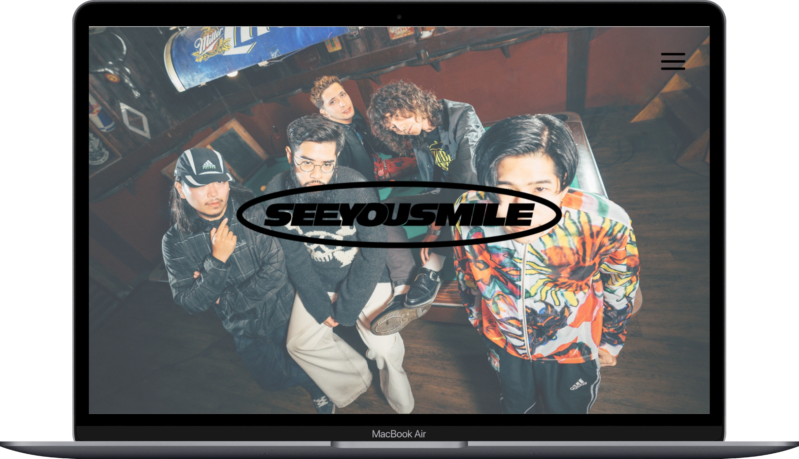

←
See You Smile 模擬サイト

About
私が好きなバンドのホームページのリニューアル版を作成しました。
Githubは
こちらから
ご覧ください。
Languages
Icons by
ICONS8
Point
このサイトでは画像の並べ方の勉強のために作成しました。
Figmaでデザインをし、計画的に制作しました
Assignment
余白をもっと上手く使ってユーザーが見やすく、客観的に見て映えるサイトを作成したい。